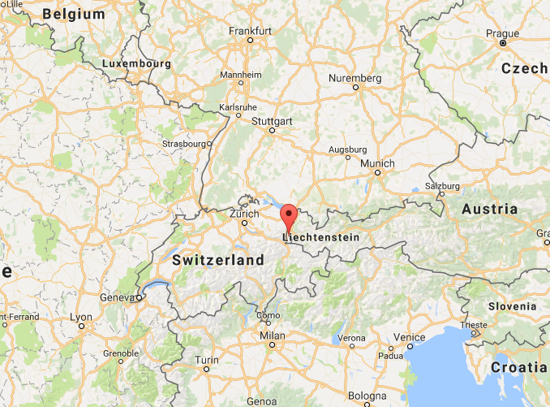
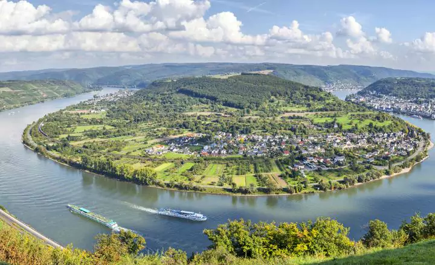
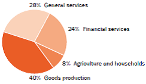
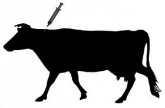
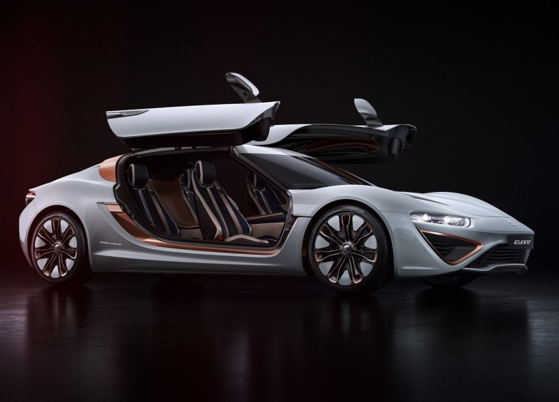

Liechtenstein Country Study
Welcome to my humble country study on Liechtenstein.
You can hover over an icon to see the label.
Click outside this dialog to exit.
Welcome to my humble country study on Liechtenstein.
You can hover over an icon to see the label.
Click outside this dialog to exit.
Liechtenstein is a doubly landlocked, German-speaking constitutional monarchy in Central Europe, located between Switzerland and Austria.
It is known for being the 6th smallest country in the world.
 History:
Before Liechtenstein existed, there were two separate territories named Vaduz and Schellenberg which took up the same space as modern Liechtenstein. Liechtenstein was formed on 23 January 1718 by the Holy Roman Emperor, Charles VI Liechtenstein was allied with Austria-Hungary during world war I Possibly because of the losing alliance in the previous war, they chose to pull a switzerland in world war II and remained neutral. Because of this, people imported their treasures to Liechtenstein for safekeeping. Liechtenstein was quite poor for some time after this, resorting to selling national treasures like "Ginevra de' Benci" by Leonardo da Vinci. However, by the late 1870s they became one of the most wealthy countries in the world due to low taxes drawing companies in.
Liechtenstein is located at 47.166890, 9.514684 between Austria and Switzerland.
 Liechtenstein is composed of mostly mountainous terrain except the Rhine valley. There are no bodies of water in Liechtenstein except the Gampriner Seele. It is continental, having cold, cloudy winters with frequent snow or rain and cool to moderately warm temperatures There are not really any distinct regions in Liechtenstein because of how tiny it is
For other human and physical characteristics, take a look at this table.
| Liechtenstein | USA | Nicaragua | |
| Land Area (km2) | 160 | 3,797,000 | 130,370 |
| Primary religion | Roman Catholic | Christian | Roman Catholic |
| Pop density (ppl/km2) | 229 | 52 | 32 |
| Annual rainfall (mm) | 1000 | 300 (Idaho) | 4500 |
| Language | German | English | Spanish |
It is quite easy to see how Liechtenstein's population pales in comparison to the others, but it has a much higher population density. There are not really many similarities between these three countries in terms of physical and human characteristics.
Minimal farming goes on in Liechtenstein because of the insignificant amount of land and the need to preserve forests to prevent erosion. People can’t really fish in a double land locked country either, except the only lake and some rivers. Other than simply living on top of the land, Liechtenstein does not interact much because most of it's suplies come from imports.
Exports are fairly limited due to Liechtenstein being so small and having virtually no natural resources, so primary exports are manufactured, not raw resources. Cables and small machinery are some primary exports. Imports are mainly foodstuffs and raw resources. Liechtenstein imports around 85% of its electricity from switzerland. There are also fairly lax migration policies between switzerland and Liechtenstein.
| Liechtenstein | USA | Nicaragua | |
| Net migration (/1000) | 5 | 3.9 | -2.9 |
| Liechtenstein | USA | Nicaragua | |
| GDP per capita | $134,617.38 | $53,041.98 | $1,851.11 |
| Unemployment (%) | 2.4 | 4.8 | 6.1 |
| Currency | Swiss franc | USD | Nicaraguan córdoba |
For centuries, Liechtenstein was almost entirely agriculture based. After world war II however, they evolved into a highly modernized, export-oriented industrial society with manufacturing as its leading sector. Liechtenstein is now one of the most wealthy countries in the world, as you can see by the GDP per capita that is almost three times as much as the USA’s. It is often viewed as a center of business. There are more non-resident business entities than there are people in Liechtenstein. General services means tourism, real estate, information technology, cleaning and repair services, and retail to name just a few. Once the fact that general services accounts for so many different things, goods production and financial services are the top industries. If you lived in Liechtenstein, the most likely sector you would be employed in is general services (51%).
Liechtenstein has an amazing education system which is probably due in part to the fact that high school teachers get paid a starting salary of $82,389, compared to the average high school teacher’s salary in the USA of $57,200. On top of this, the tiny population in Liechtenstein makes each class have only twelve students on average.
Children begin school at the age of six and continue in primary school for six years.
Depending on their proficiency in primary school they then get sent to either Oberschule or Gymnasium for four years.
Secondary school comes after this and it takes four years to complete.
Upon completion of secondary school, the student is awarded a Maturazeugnis, the equivalent of a high school diploma.
After this, it is vocational school and college in other countries since there are no universities in Liechtenstein.
School is compulsory until age 15.
There are equal opportunities for each gender in education.
Possibly due to being neutral or a small population size, Liechtenstein is one of 16 countries that has absolutely no military forces. Before the Austro-Prussian War of 1866, they did have an army of eighty men. This was disbanded because it was deemed too expensive. Either way, the population would be too small to provide an army of any significant force.
Liechtenstein is a constitutional monarchy of sorts because it has a monarch. The monarch is hereditarily chosen. There is also a democratically elected parliament. It is also a direct democracy because voters can propose and enact constitutional amendments and legislation independent of the legislature. Liechtenstein also seems to be very politically stable. This is possibly due to the fact that
| Liechtenstein | USA | Nicaragua | |
| Murder rate (/100,000) | 2.8 | 5 | 13 |
Historical interaction between the two have been very limited. Neither country has really interacted with each other except for in 2002 when they signed a mutual anti tax evasion treaty. The USA does not even have an embassy in Liechtenstein. Judging from the inadequate sample of one example, their relationship seems to be positive. Currently the USA is one of Liechtenstein’s trade partners.
(There were like 3 articles that were in English.) The first article I read, by The Cattle Site, was about how there was a Paratuberculosis Outbreak in cows. There have not been extreme measures taken to ensure the containment of the disease. Looking at this article, there is not a lot of insight I can provide as I am not a cattle farmer. It doesn’t seem like a big deal as long as it is contained.
The second article I read was on how they made a “super electric car”. This super electric car has four wheel drive and a cruising range of 1000 km. This is all possible due to the new flow batteries. I approve of this choice because it is more environmentally friendly. Liechtenstein could be a good place to start mass producing electric cars since it would be more realistic to provide charging stations there.
Liechtenstein cuisine has been influenced by Austria and Switzerland because it is sandwiched in between them. Like in many other European countries, cheeses and soups are central parts of their diet. Common dishes in liechtenstein are Käsknöpfle mit Apfelmus (a doughy pasta-style cheese dish served with applesauce), variations of Ribel (sort of like boiled cornmeal) and Schwartenmagen (pickled meat in jelly). The recipe I will be making is ribel. Ribel in the past was an absolute staple for the poor class in liechtenstein. Now it is enjoyed as one of the most traditional meals in Liechtenstein.
Ingredients
Liechtenstein’s future looks bright. It’s GDP per capita is on an upwards incline and as a business center with a stable government, I don’t see this changing anytime soon.
Dear Sir/Madam,
I am Joseph Lu, a student doing a study on Liechtenstein. As of yet, resources for this study have been obtained online. Because these sources may misrepresent Liechtenstein, I hope to obtain more accurate information from someone knowledgeable and authoritative on the subject.
If you have the time, please provide the following information.
Is Liechtenstein politically stable?
What is the outlook on Liechtenstein’s economy?
How are Liechtenstein relations with the US?
Is education equal for each gender?
Thank you for taking the time to read this letter.
Respectfully,
Joseph Lu
Your message couldn't be delivered to Bettina.Marxer@was.rep.llv.li because the remote server is misconfigured. See technical details below for more information.